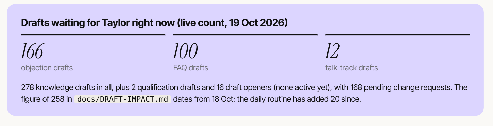

call 19,984 · support · resolvedcall 19,985 · sales · purchasedcall 19,986 · support · resolvedcall 19,987 · support · handed to a personcall 19,988 · sales · callback bookedcall 19,989 · support · resolvedcall 19,990 · support · resolvedcall 19,991 · sales · purchasedcall 19,992 · support · resolvedcall 19,993 · support · handed to a personcall 19,994 · sales · callback bookedcall 19,995 · support · resolvedcall 19,996 · support · resolvedcall 19,997 · sales · purchasedcall 19,998 · support · resolvedcall 19,999 · support · handed to a person
An illustration of the scale. The figures beside it are the real ones.
Starlink, every day
20,000customer calls answered by Grok Voice
70%roughly, resolved with no human in the loop
1 in 4sales calls ends in a purchase before the caller hangs up
Source: SpaceXAI, “Grok Voice 3.0”, x.ai/news/grok-voice-3, 14 October 2026. Company figures, not independently audited. The call log is illustrative.
Presenter notes
Hook, about 30 seconds. SAY: “Twenty thousand calls a day. Seventy per cent sorted without a human. One in four sales calls ends in a purchase before the caller hangs up. That is Grok Voice at Starlink, right now.” The scrolling log is an illustration of the scale, not real call records; the three numbers are SpaceXAI’s published figures. Earlier figure if asked: in April xAI reported a 20% sales conversion rate on the same line (x.ai/news/grok-voice-think-fast-1, 23 April 2026).
2 / 00 / Cold open
Their numbers, not ours
xAISpaceXAIGrok Voice 3.0 announcement · 14 October 2026
Roughly 70% are resolved with no human in the loop, and one in four sales calls ends in a purchase before the caller hangs up.
Their numbers. Not audited. Not cold leads.
So we built two reps on the same model. Here is exactly how.
Source: SpaceXAI, x.ai/news/grok-voice-3, 14 October 2026; the quotation is word for word. None of these figures are Pecuna Factorem results.
Presenter notes
About 30 seconds. Read the sentence, let the highlight land on “one in four sales calls”, then slap the sticky note: these are SpaceX’s own numbers about its own product, nobody has audited them, and these are people calling Starlink who already want it, not cold leads. Turn: “So we built two outbound reps on the same model. Here is exactly how they work, and where they are today.”
3 / 01 / The problem
Why outbound calling breaks
Slow to staff
Every good caller has to be found, trained and kept.
Hard to keep consistent
Every caller says it differently, on a good day and a bad one.
Generic scripts
The words come from the seller, not from the buyer.
What if every call started from what buyers actually say?
Source: Handover brief, section 03, slide 2 key message. Qualitative by design: no industry statistics are claimed.
Presenter notes
About 40 seconds. Keep this qualitative; the brief says no invented industry statistics. SAY: “Outbound calling breaks in three places. It’s slow to staff. It’s hard to keep consistent, because every caller says it differently. And the scripts are written by the seller, in the seller’s words.” Each problem is struck through as you name it. The last line is the turn into the system.
Weekdays 09:00 to 17:00 in the lead’s own time zone · federal and state holidays skipped · consent always required
One goal on every call: book a 20-minute strategy call. Second best, agree to send the booking link.
Source: Handover brief, section 09 (reps, voices, calling windows, registers, openings word for word, goal on every call).
Presenter notes
About one minute. Each opening reads itself word by word at talking pace; “AI” and “recorded” are highlighted as they are spoken. SAY: “Two reps. Charlotte calls the UK, Madison calls the US. They have names and voices, and they say plainly that they are AI, in the first sentence, every time.” Point out that Madison gives the opt-out straight after the business name. Aim for under three minutes per call. Prices and proof only ever come from the get_offer tool, never from the model. Never say “sounds human”.
5 / 03 / The system
How a call works
Leadopted in, with a consent record
Dispatcherallowed to ring now?
Phone lineUK: Twilio path · US: Telnyx
Grok Voice 3.0the conversation
Calendar20-minute call booked
Every step checks the rules before the next one runs. Consent, TPS, CTPS or DNC, the do-not-call list, local calling hours and holidays, and at most 3 attempts, 24 hours apart.
Only approved knowledge reaches the call. The call server bridges the line to Grok Voice with a lean prompt and 10 tools, and guards for silence, talk-over, call screeners, opt-outs and safety stops.
Source: Handover brief, section 08 (architecture and the life of one call) and section 13.
Presenter notes
About 90 seconds. Let the gold dot travel the line: each station flashes as the call passes it. 1) Leads are imported with consent records; the importer’s consented-only mode skips anyone without one. 2) Every few minutes in calling hours the dispatcher picks leads that pass every rule. 3) The carrier dials and streams the audio to our server. 4) The server bridges it to Grok Voice; the rep speaks first, within 2 seconds. 5) Mid-call the rep can find free slots and book. After the call it is scored, reflected on and its objections counted, and Taylor reviews everything on the dashboard. UK carrier: built on the Twilio path; the final UK carrier is still being chosen.
6 / 03 / The system
Supabase: the brain
The prospecthears only approved lines
Grok Voice 3.0 · realtime speech
The brainLeads, calls and every word the reps may say, versioned, with Taylor’s approval in front of every change.
Calling 7 tables
leads consent, source, opt-in date, time zone, callback time
suppression the do-not-call list, shared by both reps; numbers are never removed
inbound_calls, offers, prompt_versions, proposals
Knowledge 11 tables
objections 222 rows: 56 approved, 166 draft
knowledge_faq 206 rows: 106 approved, 100 draft
talk_tracks 35 rows: 23 approved, 12 draft
openers 16, all draft · plus qualification, compliance rules, personas, offer details, training examples, change requests and a technique library
Learning 3 tables
feedback human and AI scores per call
call_reflections what worked, objections raised
daily_reviews end-of-day summary per rep
Four views: calls dashboard, A/B results, opener stats, objection stats
Locked down.Row-level security on every table; only the server-side key can read or write. Recordings sit in private storage behind short-lived signed links. Every client gets their own database.
Source: Handover brief, sections 10 and 15 (live Supabase project queried read-only on 19 October 2026: 21 tables and 4 views; row counts as listed) and section 20 (one database per client).
Presenter notes
About 90 seconds. Start with the three objects: the phone, the live voice, and the brain behind it. SAY: “Everything the reps know lives in one database, versioned, and nothing in it reaches a call until Taylor approves it.” Then the three groups. Calling: who may be rung, every call and the do-not-call list, which never loses a number. Knowledge: the counts are live on 19 October, and most of it is still waiting as drafts. Learning: scores, reflections and daily reviews, which fill up once real calls start (0 rows today, 2 daily reviews). The approved rows are held in memory and refreshed every 5 minutes, so a call never waits on the database, and the prompt files are the seed and the fallback if the database cannot be reached. Lock-down was applied on 19 October (migration 018). Callbacks are columns on leads and calls, not a separate table. For Tuned Reps clients, each client has their own Supabase project and never shares a database with Pecuna or another client.
7 / 04 / The words
It starts with research
Buyer 1Buyer 2Buyer 3
Rows: feeling the problem · comparing solutions · ready to buy
3 buyer types × 3 buying stages × 10 of each
= 90 fears, 90 desires, 90 questions, 90 past experiences and 90 verbatim quotes
It doesn’t ask the client who their customers are. It reads what buyers say to each other where nobody is selling to them.
Source: Handover brief, section 11, counted from the full 154-page sample report. The client in the sample report is never named.
Presenter notes
About one minute. Nine cells pop in, one per buyer type and stage, and each fills with ten dots. SAY: “Before a single line of script is written, we build a research report on the people who buy. Three buyer types, three buying stages each, and for every stage ten fears, ten desires, ten questions, ten past experiences and ten verbatim quotes. It reads forums, one-star and five-star reviews: what buyers say when nobody is selling to them.” One stage in the sample found only 8 genuine questions and left two rows empty rather than pad them; that honesty is worth saying. Always “a sample client report”, never the client’s name.
8 / 04 / The words
Research becomes the words
Fears and past experiencesObjection handlers, ready before they cost the sale
QuestionsFAQ answers the rep looks up mid-call
Quotes and words to mirrorOpeners in the buyer’s own words
Words and claims to avoidNever-say lists the reps cannot cross
Buying stageWhen to say it: empathy, comparison or clear terms
Qualify and disqualifyThe qualifying question and the minimum budget rule
The buyer types themselvesRoleplay prospects that test the reps before they ring anyone
Source: Handover brief, section 11, “How it becomes what the reps say”, and section 10.
Presenter notes
About one minute; one tile per reveal. SAY: “This is the bit nobody else does. Every section of the report turns into something the rep actually says, or refuses to say.” Example for the first tile: “we’ve tried agencies before” is a past experience in the report, so it becomes an objection handler, ready before it costs the sale. For Pecuna’s own reps this is already in the knowledge base as drafts: 33 “how do you / why you” answers per rep, 5 new objection handlers per rep and 14 deeper report questions per rep.
9 / 05 / Control
Nothing is said until approved
DraftApprovedRetired
Drafts never reach a call. Only approved rows are ever used, and approving a new version retires the old one in one click.
Drafts waiting for Taylor, live count on 19 October 2026
0
1
2
3
4
5
6
7
8
9
0
1
2
3
4
5
6
7
8
9
0
1
2
3
4
5
6
7
8
9
objection drafts
0
1
2
3
4
5
6
7
8
9
0
1
2
3
4
5
6
7
8
9
0
1
2
3
4
5
6
7
8
9
FAQ drafts
0
1
2
3
4
5
6
7
8
9
0
1
2
3
4
5
6
7
8
9
talk-track drafts

The source: handover brief, page 10
12,000
characters per rep, down from about 35,000 The core script and top objections stay in the prompt; everything else is looked up mid-call. No match? The rep says Taylor can tell you on the call rather than improvise.
Source: Handover brief, section 10 (draft, approved, retired; live draft counts from the database on 19 October 2026; the lean prompt and the 12,000-character target). Page 10 shown as rendered.
Presenter notes
About 90 seconds. SAY: “Here is the rule that makes this safe. The reps can only say what a human has approved. Everything else is a draft, and drafts never reach a call.” The counters roll to the real database counts on 19 October, then zoom into the brief to show where they come from: 166 objection drafts, 100 FAQ drafts and 12 talk-track drafts waiting for Taylor (278 knowledge drafts in all). They are a backlog, not results. Then the circled 12,000: everything in the prompt made it 33,000 (UK) to 35,000 (US) characters, too big for fast realtime voice, so it was split.
10 / 05 / Control
The objection loop
RaiseA prospect objects. A rules-only detector counts it after the call: no AI model, no cost.
DraftNew handlers arrive as drafts: a daily routine proposes 10 (5 UK, 5 US), plus call reflections and the research.
ApproveTaylor sees each draft beside the live text and clicks Approve or Discard.
LiveThe approved version replaces the old one within about 5 minutes.
StatsRaised on how many calls, won how often. The lowest win rates are next to rewrite.
The objection standard, enforced in code
Label the concern, one concrete insight, one calibrated question. Then tie the value back and offer two real free times. Every spoken line under 45 words. A draft that falls short is refused before it reaches the database.
Source: Handover brief, section 12. The objection stats view has 0 rows today because there have been no real calls.
Presenter notes
About 90 seconds. The gold loop draws itself round the five stops. SAY: “Objections are where calls are won or lost, so they get a loop of their own. Every objection is counted, every improvement is written to a standard, and nothing goes live until a human approves it.” Then the standard: turn one labels the concern, gives one insight and asks one calibrated question; turn two ties the value to the research and offers two real free times; one backup attempt, then a polite give-up rule, and any opt-out is honoured at once. Be honest: the stats step has no data yet. Win rate will show association, not proof that the answer caused the win.
11 / 06 / On the call
Booked into your calendar
Illustrative call
RepI can do Wednesday 21 October at 2pm, or Thursday 22 October at 10am. Which suits you better?
ProspectWednesday works. It’s sam at example dot co dot uk.
RepLovely. That’s sam@example.co.uk, and the invite is on its way for Wednesday at 2pm.
Live free slotsfrom the calendar, up to 14 days ahead, in the prospect’s own time zone
08:00 to 20:00their time, at least 60 minutes ahead, spread across mornings and afternoons
Two real optionsread out in plain words; if a slot has just gone, the two nearest are offered
Email capturedand written to the contact before booking; unclear ones are read back letter by letter
Not ready to pick a time? The rep agrees to send the booking link instead.
Source: Handover brief, section 13 (booking and email rows), section 08 tools and section 09 goal. The call is illustrative: no real call has taken place.
Presenter notes
About one minute. The call appears line by line on the phone. Say it is illustrative: no live calls yet. The rules beside it are real and unit-tested, and booking and email capture are also played end to end in the offline dress rehearsal. One booking per call. Booking is GoHighLevel live slots, or a booking link; no other calendar or CRM integration exists, so do not promise one.
12 / 06 / On the call
Built for real phone life
Call screenersone fixed line says who is calling and why
Phone menusonly keys that lead to a person; never pay or voicemail
Dead airafter 7 seconds: “Hello, are you still there?”
Talk-overthe rep’s audio stops at once
Callbacks“Ring me Thursday at 2” is rung then, in their time zone
Answering machineshang up; no voicemail drops, by design
Wrong numbersapologise, pitch nothing, never ring again
Safety stopsa child or a distressed person: stop selling, a kind goodbye
Every behaviour ticked here is unit-tested and played end to end, for both reps, in the offline dress rehearsal.
Source: Handover brief, section 13 (call behaviour and safety; all eight shown are marked rehearsed).
Presenter notes
About one minute. Each box ticks as you name it. This is the slide that answers “will it embarrass us?”. Tell two as stories: the call screener (the model is muted, one fixed line, and a person who picks up hears the full opening) and safety stops (999 or 911 in an emergency, sales tools refused by the server, the lead held for Taylor’s review). Also true: “Where did you get my number?” is answered from the lead’s own consent record, and every call has a 30-minute hard limit.
13 / 07 / Safe to use
Compliance by design
Consent and leads
Opted-in leads only, each with where and when they opted in. The code refuses any US lead without written consent covering AI-voice calls. UK consent is required by default, and TPS and CTPS screening still runs.
On every call
AI disclosure, business name and recording notice in the opening. Opt-outs go on the do-not-call list at once, for both reps, permanently. No voicemail messages.
Abandoned and silent calls
If the AI has not spoken within 2 seconds, a short information message plays and the number is paused for 72 hours. A brake pauses a rep if its abandoned rate goes above 3%.
Data and privacy
Find and erase everything held on a person on request. Recordings in private storage. The database is locked to the server-side key.
Built to the UK and US calling rules. Legal sign-off in progress.
Source: Handover brief, section 14 (compliance and consent) and section 06 (approved wording). Lawyer review is pending; this is not a claim of legal approval.
Presenter notes
About 90 seconds. Each rule’s key phrase is highlighted as you say it. SAY: “Compliance isn’t left to the script. It’s enforced by the code and checked on every call.” For Tuned Reps clients, the client is the caller of record and the data controller; Pecuna is the processor. Caller of record, AI disclosure and recording notice are required as true in the client config, with no setting to turn them off. Never say “fully compliant”, “legally approved” or “TCPA-certified”. Still with Taylor and the lawyer: consent wording (including Pennsylvania’s AI-voice rule, in force 18 October 2026), DNC subscription, the do-not-call policy, recording retention and the privacy notice.
Callsevery call, with the recording, the transcript, the outcome and the score
Reviewflagged calls, return calls and proposal drafts waiting on you
Openerswhich opening lines book the most calls
Knowledgeeach draft beside the live text it would replace: Approve or Discard
Source: Handover brief, sections 16 (the dashboard pages) and 20 (the dashboard copy, word for word). No call data is shown because there have been no real calls.
Presenter notes
About one minute. The promise reads itself word by word. A private web app behind a password, with every page and recording guarded. Client copies carry the client’s own name, logo, colours and rep names. Full page list: Overview, Calls, Call detail, Offers, Review, Openers, Wins and Losses, Knowledge. If you show mock-mode screens on camera (2,500 generated calls), label them illustrative; they are not data.
The whole call path joins up: dispatcher, signed webhooks, media bridge, guards, tools, booking, opt-out, saving, scoring and reflection. 14 whole calls per rep, with every outside service faked.
What it doesn’t prove
Real audio quality and latency on a phone line, how the real model behaves, carrier delivery, or a real calendar accepting the booking. That is what six test calls per rep are for.
Source: Handover brief, section 17, page 17 shown as rendered. Test totals from the run at commit 98c9c95 on 19 October 2026 and the dress rehearsal run the same day.
Presenter notes
About one minute. Start on the whole page, then the zoom lands on the 619. PARTNER VERSION: SWAP IN this slide early, and add the core update model (one codebase; client differences only from configuration and a prompt overlay; every improvement runs on Pecuna’s own reps first, is tagged core-vX.Y.Z and rolls out to a pilot client, then everyone; rollback means pinning the previous tag; no tags exist yet). SAY: “Nothing can be proved on a real phone line until the accounts are live, so we tested it the hard way, offline, with every outside service faked.” Be exact about the limits on the right.
16 / 10 / The package
What a client gets
Buyer research report3 buyer types × 3 stages, turned into openers, objections, FAQs and roleplay prospects
10,000 opted-in leadsscreened against TPS, CTPS or the National DNC, each with its consent record
Two AI repseach calling 8 hours a day, 5 days a week, with their own names and voices
Their own databasenever shared with Pecuna or another client
A branded dashboardthe client’s name, logo, colours and rep names
$15,000one-off setup: report, leads, building and scripting both reps, accounts and database, branded dashboard, test calls, go-live
Monthlyto be confirmed
Source: Handover brief, section 20 (the package and pricing). Only the one-off setup fee is settled; the monthly fee is still Taylor’s decision.
Presenter notes
About one minute. The five notes slap onto the board one after another. The productised version is called Tuned Reps, by Pecuna Factorem; on screen we keep the Pecuna brand. SAY the package in one breath, then the price: “$15,000 one-off setup. The monthly fee is still being confirmed, so I won’t quote one.” Do not quote a monthly figure, tiers, internal costs, margins or the lead supplier’s price. Grok voices available: Eve, Ara, Rex, Sal and Leo. Optional partner extra: Grok Voice’s public rate is about $0.08 a minute of connected time.
17 / 10 / The package
From form to first call
1Day 0Contract and setup paid
2Days 1 to 3Onboarding form and kick-off call
3Days 2 to 9Buyer research report
4Days 3 to 10Accounts, phone checks, leads screened and imported
5Days 9 to 14Scripts written from the report; the client approves the drafts
✓Days 13 to 16Rehearsal, test calls, sign-off, go live
One onboarding form, twelve steps
Business, brand, offer, customers, buyer insight, FAQs and objections, calendar, calling, reps, compliance, integrations, review. It never asks for keys or passwords.
Planned at about three weeks; four if UK number checks or approvals are slow. Then a week-one review on day 5 of live calling.
Source: Handover brief, section 20 (from onboarding form to go-live; planned timeline). The research report duration is still to be confirmed.
Presenter notes
About 45 seconds. Gold fills along the track stop by stop. PARTNER VERSION: SWAP IN with the setup flow: one onboarding form produces one client config file; the setup script writes the client folder, applies every migration to the client’s own database, loads knowledge, offers and openers as drafts, generates the client’s prompt overlay with a leak check, and refuses Pecuna’s own database. It never buys numbers, spends credit or deploys. Say “planned”: no client has been set up yet, and the onboarding form is not yet deployed.
18 / 11 / Testing
What the test calls will show
Test call 1BookingTwo live slots offered, the email read back, the 20-minute call booked and the invite sent
Test call 2Opt-out“Stop” confirmed once, the number on the do-not-call list for both reps, the line closed
Test call 3Callback“Ring me Thursday at 2” read back in local time, and rung then, not before
Test call 4IdentityAsked “are you a robot?”, the rep says yes
Test call 5Wrong numberAn apology, no pitch, the number listed as do-not-call
Test call 6Talk-overThe prospect interrupts and the rep’s audio stops at once
1.5 s
the median reply we are aiming for First word within 2 seconds of answer; the slowest reply 3 seconds, or 5 after a tool. These are targets: nothing has been measured on a real phone line yet. Each call is checked afterwards, line by line.
Six calls per rep to Taylor’s own phone. Then a 50-call soft launch per rep.
Source: Handover brief, sections 17 and 19 (the six planned test calls per rep, the checks afterwards, the 50-call soft launch), section 13 (the behaviours) and section 06 (latency targets only, nothing measured).
Presenter notes
About 90 seconds. This is what we will demonstrate when Grok Voice goes on a real phone line. SAY: “The rehearsal proved the system joins up. These six calls prove it on a real line, with the real model.” Each rep makes the same six calls to Taylor’s own phone: booking, opt-out, callback, identity, wrong number and talk-over, and every one is checked afterwards with the check-test-call script. What they will show for the first time: real audio quality and reply speed, how the real Grok model behaves, carrier delivery, and a real GoHighLevel calendar accepting the booking. The circled 1.5 seconds is a target, not a result. Only after these pass does each rep get a 50-call soft launch; go-live is Taylor’s decision. Roleplay against the 31 simulated prospects (target 8 out of 10 or better, with zero compliance fails) also runs once the xAI account has credits.
19 / 12 / Next step
Book 20 minutes with Taylor
Invitation20 minutes
Next step20
A 20-minute call with Taylor
See the reps, the research and the dashboard, and whether it fits your calendar.
Two honest AI reps, scripted from real buyer research, approved line by line by a human, calling only people who agreed to be called, and booking the meeting straight into the calendar.
Source: Handover brief, section 21 (“In one sentence”) and section 03, slide 16 call to action.
Presenter notes
About 30 seconds. The invite rises in and gets its tick: the deck ends on the thing the reps produce, a booked call. Then read the one sentence slowly. Come back to the title honestly if you used it: Grok Voice is already closing inbound sales calls at Starlink; whether it replaces reps for outbound is what our first live calls will show, and we will show those numbers when we have them.
Built from Taylor Cunningham’s Grok Voice outbound system handover brief (19 October 2026), checked against the outbound-caller repository and live database that day. Starlink figures are SpaceXAI’s own, from x.ai/news/grok-voice-3 (14 October 2026), not independently audited and not Pecuna results. There have been no real calls: no booking rates, results or testimonials are claimed. The call log and the booking call are illustrative; pages 10 and 17 of the brief are shown as rendered. Compliance is built in; legal sign-off is in progress. The monthly fee is not yet set.